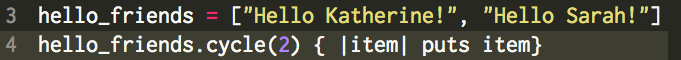
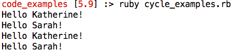
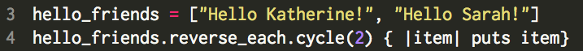
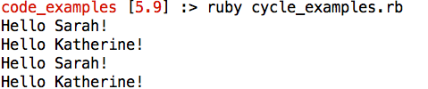

Cycle Method
February 21, 2016
What is the cycle method?
Cycle is one of the Ruby Enumerable methods that allows programmers to modify the data they enter into their program. Specifically, cycle allows the user to cycle through each element in a list and repeat it a specified number of times. It is important to note that is the number of times is not specified, the method will run infinitely (and we don't want that!) Cycle can be used to repeat a list both forwards and backwards, which is shown below.
Cycle in action!
The traditional way to implement the cycle method is to specify how many times a particular block of code will repeat. The cycle will begin at the first element and continue through based on the number of cycles. The example below shows the Ruby code, which will cycle through the hello_friends list a total of two times.
When Ruby runs this code through the interpreter, we will see the greetings repeated twice:
What if you want the list to cycle in the opposite direction? This can be done by combining the reverse_each method with the cycle method. Reverse_each simply reverses the order of the list, and cycle will repeate the list the number of times specified. The example below shows the Ruby code, which will cycle backwards through the hello_friends list a total of two times.
When Ruby runs this code through the interpreter, we will see the greetings repeated twice in the opposite order:
While the cycle method is just one Enumerable available to programmers, it is an excellent way to repeat information using a concise amount of code.